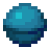
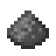
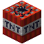
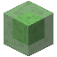
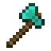
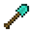
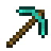
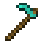
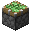
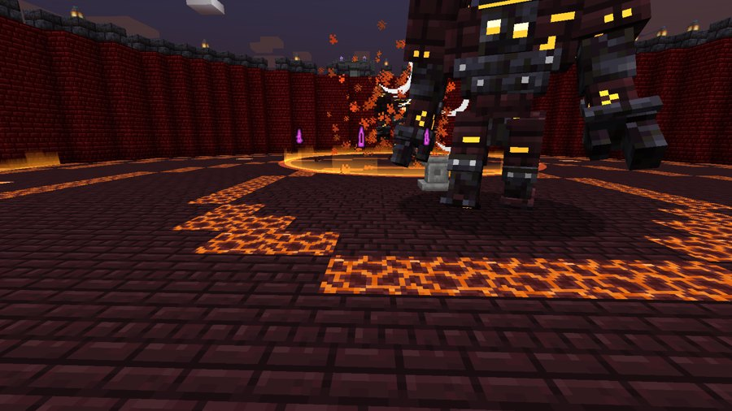

Blocos que flutuam na mão e dão poderes elementais.
Mana: você tem 10 de mana (o orbe entre a vida e a fome), que recupera 1 a cada 2 minutos. Cada poder gasta um pouco (veja a coluna "Mana"). Sem mana, o Conversor de Almas paga com XP.
Bloco de Fogo
Um bloco de magma que gira sobre a mão. Dá resistência ao fogo enquanto está na mão.
Bancada de trabalho
➜
Variante vermelha
Coloque o bloco no Nature Infuser com um Bloco de Redstone na alimentação: o bloco vira magma vermelho e todos os ataques (chamas, bola de fogo, cogubrilho) ficam vermelhos.
Nature Infuser
+
➜
em cima: entrada · embaixo: alimentação
Ação
Efeito
Mana
Segurar direito
Lança-chamas em cone (12 blocos, abre até 3x3)
1 a cada 5s
Bater
Bola de fogo explosiva que não quebra blocos
1
Shift + bater
Explosão de chamas em volta que empurra forte
1
Shift + segurar direito
Carrega um cogubrilho gigante; solte para lançar
3
Bloco de Sculk
O poder do Warden na sua mão.
Bancada de trabalho
➜
Ação
Efeito
Mana
Bater
Estrondo sônico: 12 de dano que ignora armadura
1
Segurar direito
Mostra o contorno das criaturas (só para você)
—
Shift + segurar direito
Invoca um Warden aliado (some se o bloco sair do inventário)
5
Shift + bater
Escuridão nos outros, você fica invisível e o sculk se espalha
3
Na segunda mão
Matar uma criatura espalha sculk onde ela morreu
—
Bloco de Folha
Cura e proteção. Combine com qualquer folha, verruga do Nether ou cogumelo para mudar a aparência (o muro de troncos muda junto).
Bancada de trabalho
➜
Ação
Efeito
Mana
Segurar direito
Cura quem você olha (ou você)
1 a cada 5s
Shift + segurar direito
Área de cura 5x5 cercada por um muro de troncos
2 a cada 5s
Bater
Folha que causa Lentidão III (e age como farinha de osso)
—
Bloco de Blackstone Dourado
O Bloco de Blackstone Dourado.
Bancada de trabalho
➜
Ação
Efeito
Mana
Segurar direito
Restaura a fome com muita saturação
1 por uso
Shift + segurar direito
Forma dourada: Resistência II, +5 corações, Regeneração e Resistência ao Fogo
1 a cada 10s
No inventário
Ferramentas e armaduras viram de ouro; espada de ouro dá 15 de dano
—
Na segunda mão
Machado de ouro 10, armadura de ouro = netherita +1, dobro de durabilidade
—
Bloco de Spawner
Invoca aliados. Combine com uma tinta para mudar a cor do concreto que gira dentro dele.
Bancada de trabalho
➜
Ação
Efeito
Mana
Bater olhando uma criatura
Marca o alvo das invocações
—
Direito
Cabeça de esqueleto que invoca um esqueleto
1
Shift + bater
Cabeça de zumbi que invoca um zumbi
1
Shift + direito
Esqueleto campeão com cópia da sua armadura e da sua arma
3
Máximo de 8 invocações, que duram 90 segundos.
Bloco de Baú
Um armazenamento mágico de 54 espaços. Não gasta mana. Funciona em baús, baús com armadilha, barris, caixas de shulker e ejetores. Combine com um recipiente para mudar a aparência (shulkers mantêm a cor).
Bancada de trabalho
➜
Ação
Efeito
Mana
Bater num recipiente
Guarda tudo o que tem nele
—
Shift + bater num recipiente
Despeja tudo o que está guardado
—
Shift + direito num recipiente
Despeja só os itens que ele já tem
—
Direito (fora de recipiente)
Abre o armazenamento
—
Bloco de Void
O poder do nada. Em qualquer mão dá um voo instável (nunca fica parado no ar).
Bancada de trabalho
➜
Ação
Efeito
Mana
Segurar direito
Buraco negro sobre a cabeça que puxa tudo e explode ao soltar
—
Shift + segurar direito
Lança o buraco negro, arrastando criaturas e corrompendo blocos
—
Bater
Projétil que corrompe os blocos atingidos
—
Shift + bater
Agarra uma criatura; ela segue a sua mira. Bata de novo para arremessar
—
Blocos corrompidos ficam intangíveis por 15 segundos e depois voltam ao normal.
Bloco de Água
Domínio da água. Na mão: Respiração Aquática e voo igual ao do criativo enquanto estiver embaixo da água.
Bancada de trabalho

➜
Ação
Efeito
Mana
Bater
Bola de água: a cabeça do atingido fica num bloco de água por 20s
1
Segurar direito
Jato de água (17 blocos) que empurra e apaga fogo
1 a cada 10s
Bloco de Gelo
Domínio do gelo. Em qualquer mão: desliza em todos os blocos como no gelo e anda sobre água e lava.
Nature Infuser
+
➜
em cima: entrada · embaixo: alimentação
Ação
Efeito
Mana
Segurar direito
Jato congelante que deixa lento
1 a cada 5s
Shift + direito
Tempestade de neve (10s): atrapalha a visão dos outros, deixa lento e congela
3
Bloco de TNT
Explosões controladas. Em qualquer mão você fica imune a explosões (sem dano e sem ser arremessado).
Bancada de trabalho


➜
Ação
Efeito
Mana
Bater
Explosão onde a mira acerta; não te fere e nunca quebra blocos
—
Segurar direito
Acende uma TNT na mão; a barra acima da fome mostra o tempo até explodir. Solte para arremessar
3
Shift + segurar direito
10s de carga com sirene (a TNT sobe girando sobre a cabeça); ao soltar, explosão nuclear com alcance de 30 blocos e um cogumelo de fumaça de 30 blocos de altura que fica no céu
5
TNT Ativa
Coloque o Bloco de TNT no Nature Infuser com uma TNT comum na alimentação: a versão ativa é igual ao bloco normal, só que a TNT arremessada e a explosão nuclear quebram blocos (bater continua sem quebrar). A nuclear abre uma cratera de 30 blocos de raio e 18 de profundidade, limpando tudo até 28 blocos acima, com a borda chamuscada (pedra-negra, basalto, magma) e fogo. Baús atingidos soltam os itens.
Nature Infuser
+
➜
em cima: entrada · embaixo: alimentação
Bloco de Slime
Um cubo de slime translúcido que flutua girando sobre a mão e vira a ferramenta que você precisa, todas de slime translúcido e com a força do diamante (ao se transformar ele vira uma gota que chacoalha, com partículas e som de slime). Depois de uns 3 segundos sem uso volta ao formato padrão.
Bancada de trabalho





➜
Ação
Forma
Mana
Bater numa criatura
Vira espada (7 de dano, como a de diamante)
—
Quebrar pedra / madeira / terra / folhas
Vira picareta / machado / pá / enxada
—
Direito numa terra ou grama
Ara (enxada)
—
Direito num tronco ou cobre
Descasca, raspa ou tira a cera (machado)
—
Shift + direito na grama
Faz caminho (pá)
—
Segurar direito (olhando para uma criatura ou para o nada)
Escudo levantado: bloqueia como um escudo
—
Formato padrão
Na bancada, junte o Bloco de Slime com uma ferramenta de diamante (espada, picareta, machado, pá ou enxada) ou um escudo: esse vira o formato padrão, e a ferramenta volta para você. Uma bola de slime volta o padrão para o bloco. Ele continua mudando conforme a necessidade.
Aceita os encantamentos de espada, ferramentas e escudo (Afiação, Eficiência, Fortuna, Toque Suave, Saque, Inquebrável, Remendo...). Pode ser tingido como a armadura de couro e é consertado com bolas de slime. Não tem versão corrompida.
Bloco de Redstone
Circuitos acesos que pulsam como um relógio de redstone.
Bancada de trabalho

➜
Ação
Efeito
Mana
Bater
Faísca de redstone em linha reta (16 blocos): 5 de dano e Lentidão II
1
Direito
Corrente Carmesim: um raio de redstone acerta a criatura na mira (até 20 blocos) e salta em ziguezague para até 4 monstros perto (8 blocos entre eles): 6 de dano em cada e Lentidão II por 2s. Recarga 4s. Sem alvo não gasta mana. No Verdadeiro: 6 saltos e 9 de dano
3
Shift + segurar direito
Kamehameha: carrega uma esfera de energia 3D nas mãos por 4 segundos (barra de carga acima da fome) e, ao soltar, dispara um feixe 3D brilhante que segue a mira. Disparar custa de 1 (carga fraca) a 4 de mana (carga cheia), e o feixe gasta mais 1 por segundo. Quanto mais carga, mais largo, longo e forte (até 10 de dano a cada meio segundo); cada acerto cura 1 coração
1 a cada 3s
Pedestal da Ruína
Pelo mundo existem Ruínas de seis elementos, cada uma com um Pedestal no meio. Clique no pedestal segurando o Bloco Mágico do elemento (ele não é gasto): o chão treme, o golem sobe da terra e ruge com uma onda de choque; uma arena de 20 blocos de raio é erguida e o Golem do elemento desperta, com barra de vida, padrões de ataque e música de luta própria. Todo ataque tem um aviso antes: áreas vermelhas no chão (círculos, faixas com setas, quadrados) e linhas de mira brilhantes; a área VERDE é segura.
Fase 2
Com metade da vida o golem se transforma (fica invulnerável por 3 segundos, com ondas de choque e uma explosão que empurra todos): fica maior, ganha cristais brilhando e uma aura de energia, a música muda para a versão da fase 2, ele ataca mais rápido, machuca quem fica colado e ganha um ataque supremo que junta dois ataques ao mesmo tempo.

O Golem de Fogo na arena dele
Golem (onde fica a ruína)
Desperta com
Ataques
Fogo (deserto, savana)
Bloco de Fogo
Anéis de Chamas: paredes baixas de fogo que se espalham devagar pelo chão, PULE por cima; Chuva de Meteoros; Sopro de Fogo; Cruz de Magma
Água (praia, pântano)
Bloco de Água
Tsunami numa faixa marcada; Gêiseres sob você; Redemoinho que puxa; Bolha Prisão (saia do círculo!)
Trovão (planícies, colinas)
Bloco de Trovão
Laser Elétrico: esconda-se atrás dos pilares da arena; Raios Marcados; Investida Elétrica; Laser Giratório de 360°
Ouro (badlands)
Bloco de Blackstone Dourado
Espinhos de Ouro em xadrez (duas ondas); Chuva de Moedas; Investida; Zona de Midas (fique no círculo VERDE)
Gelo (neve)
Bloco de Gelo
Linhas de Estacas de gelo; Sopro Congelante; Granizo; Prisão de Gelo
Redstone (florestas, taiga)
Bloco de Redstone
Laser Vermelho: os pilares de cobertura SOBEM do chão (lâmpadas acesas) na hora; Minas; Circuito; Torretas (3 torretas de verdade sobem do chão e giram a cabeça para você; linha de mira antes de cada tiro; cada torreta quebra com 3 golpes ou flechadas)
TNT (selvas)
Bloco de TNT
Bombardeio em fileira marcada; TNTs arremessadas em círculos marcados; Mega Bomba com bipe cada vez mais rápido: saia do disco; Chuva de TNT
Blocos Verdadeiros
O Bloco Mágico colocado no pedestal fica guardado. Quando o golem cai, ele volta como Verdadeiro (nome dourado e brilho de encantado), com habilidades melhores e um ATAQUE NOVO:
Bloco
Melhorias
Verdadeiro Bloco de Fogo
Bater: Meteoro que cai do céu onde você mira (40 blocos). Lança-chamas de 16 blocos com o dobro de dano; explosão de chamas de 7 blocos
Verdadeiro Bloco de Água
Shift + direito: Tsunami, uma parede de água que avança 24 blocos. Jato de 26 blocos que empurra mais e fere
Verdadeiro Bloco de Trovão
Shift + bater: Tempestade, raios caem sozinhos nos monstros perto por 8s. Cadeia em 8 alvos; 3 raios; salto de 15 blocos
Verdadeiro Blackstone Dourado
Bater: Toque de Midas, o alvo fica lento e fraco, leva +50% de dano e solta pepitas. Forma dourada com Resistência III, Regeneração II e Força
Verdadeiro Bloco de Gelo
Bater: Linha de Estacas de cristais de gelo pontudos que brotam para a frente (16 blocos) e terminam num leque de cristais. Jato de 26 blocos que fere; nevasca de raio 14
Verdadeiro Bloco de Redstone
Shift + bater: Torreta de redstone (sobe do chão, gira mirando e atira lasers nos monstros por 10s). Kamehameha carrega em 3s, mais grosso, mais longo, +50% de dano e cura 1,5 coração; faísca de 8; Sobrecarga um nível acima por 15s
Verdadeiro Bloco de TNT
A explosão nuclear cai onde você mira, até 75 blocos; a TNT arremessada vira bomba de fragmentação (4 explosões extras)
A arena não pode ser quebrada enquanto o golem estiver vivo: nem na mão, nem por explosões, nem pela cratera da nuclear do Bloco de TNT, pela corrupção do Void ou pelo Minerador da Natureza. Na aba criativa há os Invocadores (um pedestal de cada golem) para colocar onde quiser. Todos também dão um Esmagar quando você está colado (disco vermelho em volta dele). Cada golem tem 175 corações, armadura, e deixa 500 de experiência, Essência e Orbes de Mana, diamantes e itens do elemento (Coração do Mar, Maçã Dourada Encantada, sucata de Netherita...).
Bloco de Fogo Corrompido
Os Blocos de Fogo, Folha, Blackstone Dourado, Spawner, Água, Gelo e TNT têm uma versão corrompida (escurecida e avermelhada), achada em baús de estruturas que combinam com ele. Funciona como o bloco normal, mas é mais fraca (quem segura causa 40% menos dano e se cura 40% menos) e aguenta só 2 usos: cada habilidade usada gasta 1. Não pode ser consertada, encantada (nada de Remendo) nem colocada na Espada de Manilium.